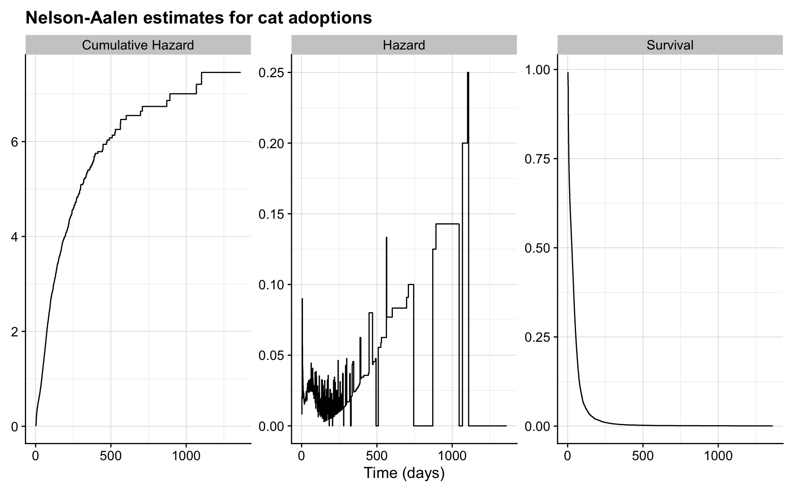

Chapter 5 Modeling the hazard function
Markmiðið er að búa til líkan fyrir hættuföllin þ.e. hazard föllin og lýsa hvernig bakgrunnsreytur hafa áhrif á þau. Tökum dæmi úr sýnidæmi 1.3 sem fjallar um lifun sjúklinga með multiple myeloma
Survival_of_multiple_myeloma_patients <- read.table("Data/Survival of multiple myeloma patients.dat",
header=T)
d_1_3 <- Survival_of_multiple_myeloma_patientsSkýribreyturnar þar eru:
## [1] "age" "sex" "bun" "ca" "hb" "pcells" "protein"Fyrstu línur eru:
## patient time status age sex bun ca hb pcells protein
## 1 1 13 1 66 1 25 10 14.6 18 1
## 2 2 52 0 66 1 13 11 12.0 100 0
## 3 3 6 1 53 2 15 13 11.4 33 1
## 4 4 40 1 69 1 10 10 10.2 30 1
## 5 5 10 1 65 1 20 10 13.2 66 0
## 6 6 7 0 57 2 12 8 9.9 45 0Í sýnidæmi 1.4 er borin saman lifun sjúklinga með blöðruhálskirtilskrabbamein eftir meðferð.
Comparison_of_two_treatments_for_prostatic_cancer <- read.table("Data/Comparison of two treatments for prostatic cancer.dat",header=T)
d_1_4 <- Comparison_of_two_treatments_for_prostatic_cancer
d_1_4 <- d_1_4 %>% mutate(treatmentf=factor(treatment))Meðferðin er treatment dálkurinn og fyrstu línur eru:
## patient treatment time status age shb size index treatmentf
## 1 1 1 65 0 67 13.4 34 8 1
## 2 2 2 61 0 60 14.6 4 10 2
## 3 3 2 60 0 77 15.6 3 8 2
## 4 4 1 58 0 64 16.2 6 9 1
## 5 5 2 51 0 65 14.1 21 9 2
## 6 6 1 51 0 61 13.5 8 8 15.1 A model for comparison of two groups
Byrjum á að bera saman tvo hópa og notum gögnin úr sýnidæmi 1.4. Meðferðirnar eru tvær:
##
## 1 2
## 18 20Við eigum alltaf að byrja á að meta fjölda atburða, eftirfylgnitíma og tíðni atburða á tímaeiningu.
## n d V lambda se.lambda
## 1 38 6 1890 0.003174603 0.001296026r <- d_1_4 %>% group_by(treatmentf) %>% summarise(n=n(),
d=sum(status),
V=sum(time),lambda=d/V,se.lambda=sqrt(d)/V)
r## # A tibble: 2 x 6
## treatmentf n d V lambda se.lambda
## <fct> <int> <int> <int> <dbl> <dbl>
## 1 1 18 5 821 0.00609 0.00272
## 2 2 20 1 1069 0.000935 0.000935Við sjáum að tíðni atburða er lægri fyrir meðferð tvö og hættuhlutfallið er
## [1] 0.1536015Reyndar er þetta mat það sama og ef við miðum við veldisdreifingu á lifunartímanum. Einfalt er að meta hættuhlutfallið með flexurvreg fallinu í flexurv pakkanum:
## Call:
## flexsurvreg(formula = Surv(time, status) ~ 1, data = d_1_4, dist = "exponential")
##
## Estimates:
## est L95% U95% se
## rate 0.00317 0.00143 0.00707 0.00130
##
## N = 38, Events: 6, Censored: 32
## Total time at risk: 1890
## Log-likelihood = -40.51544, df = 1
## AIC = 83.03087## Call:
## flexsurvreg(formula = Surv(time, status) ~ treatmentf, data = d_1_4,
## dist = "exponential")
##
## Estimates:
## data mean est L95% U95% se exp(est)
## rate NA 0.00609 0.00253 0.01463 0.00272 NA
## treatmentf2 0.52632 -1.87339 -4.02043 0.27364 1.09545 0.15360
## L95% U95%
## rate NA NA
## treatmentf2 0.01795 1.31474
##
## N = 38, Events: 6, Censored: 32
## Total time at risk: 1890
## Log-likelihood = -38.4799, df = 2
## AIC = 80.95981Í fyrsta líkaninu er engin skýribreyta og fæst þá tíðnin fyrir allan hópinn. Berið saman við r0 að ofan.
Í seinna líkaninu býr flexurvreg til dummy breytu þannig að ef treatment er 1 fær dummy breytan gildið 0 en ef treatment er 2 fær dummy breytan gildið 1. Grunnhættufallið sem flexurvreg metur er fyrir öll gildi á skýribreytum sem 0. Hér er bara ein skýribreyta og þegar hún er 0 gildið að treatment er 1.
Að ofan gefur línan rate þá matið á lambda í veldisdreifingunni þegar treatment er 1. Síðan gefur línan treatmentf2 mismuninn á log-rate á treatment=2 miðað við treatment=1.
## [1] -1.873394Hættuhlutfallið er
## [1] 0.1536015Öryggisbilið er vítt og inniheldur 1. Það næst ekki að sýna fram á tölfræðilega marktækan mun hér með Wald prófinu.
## 2.5 % 97.5 %
## 0.01794531 1.31474020Log-likelihood prófið er aflmeira og rétt nær að sýna fram á martkækan mun
## 'log Lik.' 4.071062 (df=1)## 'log Lik.' 0.04362384 (df=1)Athugið að hættuhlutfallið er um 85% lægra í treatment=1 miðað við treatment=2! Það væri til mikils að rannsaka þetta betur með stærra þýði.
Hér getum við skrifað \(h_0(t) = \lambda\) fyrir treatment=1 og \(h_1(t) = \exp(\beta) h_0(t)\) fyrir treatment=2.
Þetta er einfaldasta proportional hazards líkanið.
Við getum valið annað form á \(h_0(t)\) (t.d. Weibull) eða haft óstikað mat á \(h_0(t)\) og erum við þá komin með líkan Cox.
Við höfum þegar kynnst alveg óstikuðu mati á lifunartíma. Við skulum rifja það upp og teikna stikaða matið með óstikaða matinu úr aðferð Kaplan-Meier.
Við höfum að \(h_0(t) = \lambda\). Þá er \(H_0(t) = \lambda t\) og \(S_0(t) = \exp(-\lambda t)\). Svo er \(h_1(t) = \exp(\beta) h_0(t)\) og þá \(H_1(t) = \exp(\beta) \lambda t\) og \(S_1(t) =\exp(-\exp(\beta) \lambda t) = \exp(-\lambda t) ^ {\exp(\beta)} = S_0(t) ^{\exp(\beta)}\).
s1 <- survfit(Surv(time,status) ~ treatmentf,data=d_1_4)
plot(s1)
t <- 0:70
lines(t,exp(-0.00609 * t),col="blue")
lines(t,exp(-0.00609 * t) ^ exp( -1.87339 ),col="red")
Óstikað próf á mun má milli meðferða væri gert með log rank:
## Call:
## survdiff(formula = Surv(time, status) ~ treatmentf, data = d_1_4)
##
## N Observed Expected (O-E)^2/E (O-E)^2/V
## treatmentf=1 18 5 2.47 2.58 4.42
## treatmentf=2 20 1 3.53 1.81 4.42
##
## Chisq= 4.4 on 1 degrees of freedom, p= 0.04Hér fæst marktækt lægri tíðni atburða í treatment 2 miðað við treatment 1.
Til að undirbúa okkur fyrir Cox líkanið skulum við skoða niðurstöðuna úr því líkani með coxph. Hér er \(h_0(t)\) óstikað og við fáum bara hlutfallið \(\exp(\beta)\) á milli \(h_1(t)\) og \(h_0(t)\).
## Call:
## coxph(formula = Surv(time, status) ~ treatmentf, data = d_1_4,
## ties = "breslow")
##
## coef exp(coef) se(coef) z p
## treatmentf2 -1.9780 0.1384 1.0982 -1.801 0.0717
##
## Likelihood ratio test=4.55 on 1 df, p=0.03293
## n= 38, number of events= 6Niðurstöðurnar eru líkar niðurstöðunni að ofan úr veldisdreifingunni, en ekki alveg eins. Við lærum seinna hvernig við náum í matið á \(h_0(t)\) úr Cox líkaninu.
5.2 The general proportional hazards model
Almennt skrifum við proportional hazards líkanið svona
\[ h(t) = h_0(t) \exp(\beta_1 x_1 + \cdots + \beta_p x_p). \]
Með því að deila með \(h_0(t)\) og taka logra fæst:
\[ \log \left( \frac{h(t)}{h_0(t)} \right) = \beta_1 x_1 + \cdots + \beta_p x_p. \]
Með öðrum orðum er logrinn af áhættuhlutfallinu línuleg samantekt af skýribreytunum.
Farið er með skýribreytur alveg eins í öðrum línulegum líkönum eins og aðhvarfsgreiningu og tvíkosta aðhvarfsgreiningu.